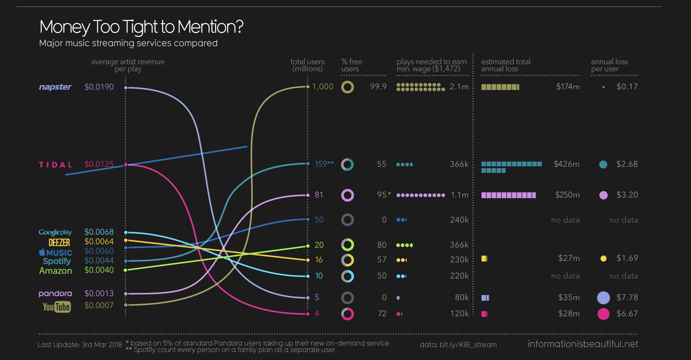

Project
Welcome to my redesign project, where I present two original visualizations and two redesigns for each. Navigate easily using the buttons below.
Music Streaming Services Comparison

Source: information is beautiful
Analysis of Music Streaming Services Comparison
This graph compares various major music streaming services, focusing on metrics like average artist revenue per play, total users, percentage of free users, and estimated annual loss. While the intent is clear—highlighting the disparities in how different services pay artists—the visualization presents several issues.
- Issue 1: The original graph had overlapping lines that created visual clutter, making it difficult to distinguish between the different streaming services.
- Issue 2: The inconsistent use of colors made it hard to track and compare key metrics like revenue per play and total users, leading to confusion in interpreting the data.
Redesign 1
Discussion: Here we Simplified the original cluttered design with overlapping lines by using a bar chart and We Used consistent colours and Plotly to make the chart interactive, allowing users to hover over each bar for detailed values.
Redesign 2
Discussion:Enhanced the clarity by replacing tangled lines with a bubble chart and We Added interactive features with Plotly, enabling users to hover over bubbles to see total users and revenue details.
Global Literacy Rates

Source: beautiful news daily
Analysis of Global Literacy Rates
This graph compares global literacy rates between females and males from 1976 to 2017. The key takeaway is that literacy rates for both genders have increased, with female literacy rising from 61% to 83% and male literacy dropping slightly from 90% to 77%, showing a narrowing gap between the two.
- Issue 1: The graph didn’t clearly show how the gap between male and female literacy rates was closing, making it harder to compare their progress.
- Issue 2: he lack of overlapping lines made it difficult to see how female literacy rates were improving relative to male literacy rates.
Redesign 1
Discussion: We Focused on emphasizing the gender gap in literacy rates and We Used Plotly’s interactive capabilities to let users explore specific data points for male and female literacy rates over time.
Redesign 2
Discussion: We Improved trend comparison by combining male and female data and We added interactive features using Plotly, allowing users to hover over the chart for specific year-by-year literacy rate comparisons.
Conclusion
Through the redesign of the original visualizations, we have enhanced the overall clarity, interpretability, and engagement of the data. By simplifying the layouts, using consistent colours, and removing unnecessary visual clutter, the comparisons between different variables are now much clearer. Furthermore, by integrating interactive features using Plotly, we have allowed users to explore the data more deeply and interactively. These changes make the visualizations more effective in conveying the key messages while ensuring a more engaging user experience.
References
- Music Streaming Services Comparison: Dr Stephanie Starling, Miriam Quick, 2018, See the Source
- Global Literacy Rates: Johan Norberg, 2016, See the Source
- Tools: R, ggplot2, dplyr, plotly, ggiraph, ggrepel